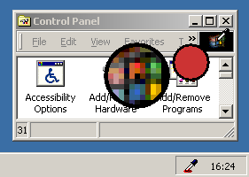

Quickstart
HTML Color Picker lies in your systemtray, as layed-out below:

To pick a color, directly from your desktop, double-click the icon to display the "zoom & preview" toolbar.
Now, move your mouse around! The left circle shows the area under the mousecursor zoomed, the right circle shows a color preview of the current pixel!
Next, click to copy the current color to your clipboard (right-click to abort).